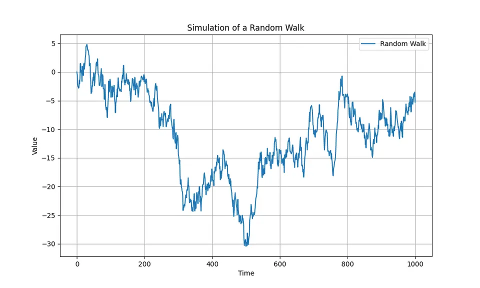
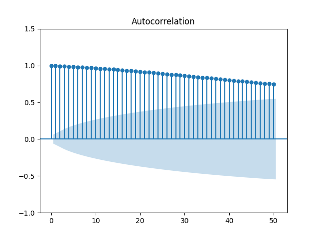
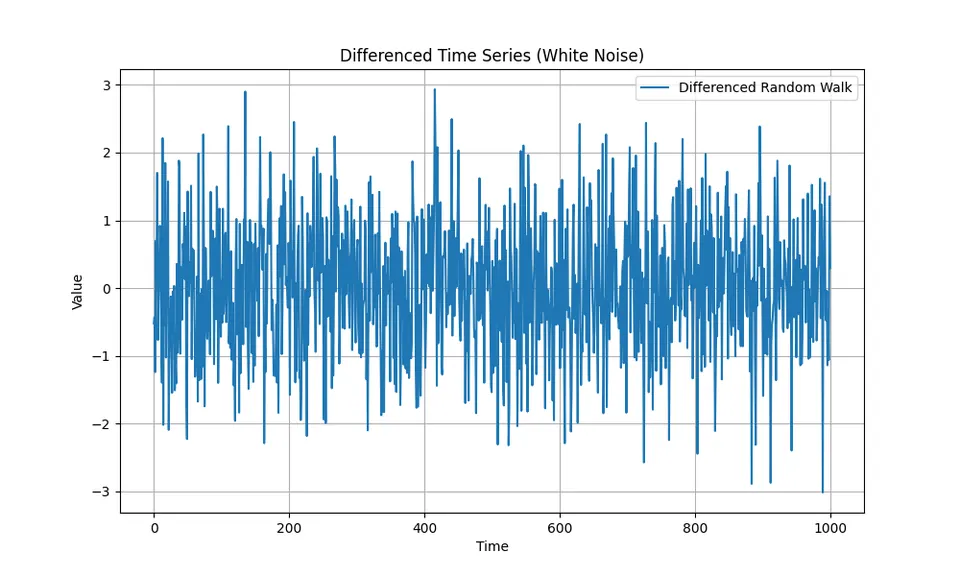
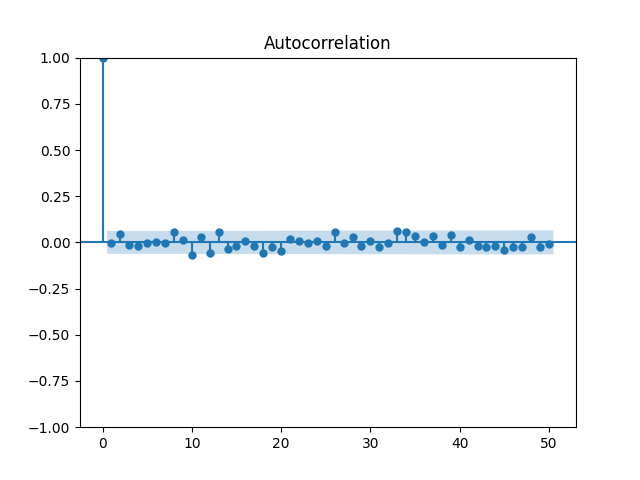

Random Walk Model
A random walk models a level that changes by accumulating new shocks over time. Each innovation is temporary as an increment but permanent in the level, so the process can drift far from its starting point even when the expected one-step change is zero.
This accumulation makes the level fundamentally non-stationary: uncertainty grows with the forecast horizon, while first differences recover the underlying increments. Random walks are therefore both a basic model of stochastic trends and an important benchmark for deciding whether a more elaborate forecasting model adds value.
Formula reference
| Quantity / variant | General formula | Interpretation / special case |
|---|---|---|
| Random walk | $X_t=X_{t-1}+\varepsilon_t$ | Equivalent to ARIMA$(0,1,0)$. |
| Cumulative form | $X_t=X_0+\sum_{j=1}^{t}\varepsilon_j$ | Every shock has a permanent effect on the level. |
| First difference | $\Delta X_t=(1-B)X_t=\varepsilon_t$ | The increments are stationary white noise in the basic model. |
| Mean, no drift | $E[X_t\mid X_0]=X_0$ | Individual paths still wander. |
| Variance, no drift | $\mathrm{Var}(X_t\mid X_0)=t\sigma^2$ | Increasing variance makes the level nonstationary. |
| Covariance | $\mathrm{Cov}(X_s,X_t\mid X_0)=\min(s,t)\sigma^2$ | For independent increments. |
| Random walk with drift | $X_t=\delta+X_{t-1}+\varepsilon_t$ | ARIMA$(0,1,0)$ with drift under the usual parameterization. |
| Drift cumulative form | $X_t=X_0+\delta t+\sum_{j=1}^{t}\varepsilon_j$ | $E[X_t\mid X_0]=X_0+\delta t$. |
| $h$-step forecast | $\hat X_{T+h\mid T}=X_T+h\delta$ | Set $\delta=0$ for the zero-drift random walk. |
| Forecast-error variance | $\mathrm{Var}(X_{T+h}-\hat X_{T+h\mid T}\mid\mathcal F_T)=h\sigma^2$ | Forecast uncertainty grows linearly in horizon. |
| Gaussian forecast interval | $\hat X_{T+h\mid T}\pm z_{1-\alpha/2}\sigma\sqrt h$ | Requires Gaussian or approximate Gaussian innovations. |
| Geometric random walk | $P_t=P_{t-1}e^{\mu+\varepsilon_t}$ | In logs: $\log P_t=\log P_{t-1}+\mu+\varepsilon_t$. |
Worked calculation: one path and one forecast
Let $X_0=5$ and let the first three shocks be $1,-2,$ and $0.5$. Then
$$ X_1=6,\qquad X_2=4,\qquad X_3=4.5. $$
If the shocks are independent with variance $\sigma^2=1$, then
$$ \mathrm{Var}(X_3\mid X_0)=3. $$
For a zero-drift random walk, the conditional-mean forecast from time 3 is
$$ E(X_{3+h}\mid X_3)=X_3=4.5 $$
for every horizon $h$. The point forecast stays flat, but its uncertainty grows:
$$ \mathrm{Var}(X_{3+h}\mid X_3)=h\sigma^2. $$

The plotted path can wander for long periods in one direction even though the model has no deterministic slope. That distinction between a realized path and the process mean is central to understanding random walks.
Student guide: paths, forecasts, and first differences
The random walk is the canonical example of a non-stationary level with stationary increments:
$$ X_t=X_{t-1}+\varepsilon_t. $$
Repeated substitution gives
$$ X_t=X_0+\varepsilon_1+\cdots+\varepsilon_t. $$
Each shock has a permanent effect on the level because it remains inside every later cumulative sum.
Numerical path
Let $X_0=5$ and shocks $(1,-2,0.5,1.5)$. Then
$$ X_1=6,\quad X_2=4,\quad X_3=4.5,\quad X_4=6. $$
The first differences recover the shocks:
$$ \Delta X_t=X_t-X_{t-1}. $$
If the shocks have variance $\sigma^2=1$, then
$$ \mathrm{Var}(X_4\mid X_0)=4. $$
The path can move down or up for several observations even when the model has no deterministic trend. One realization should not be interpreted as evidence for a stable slope.
Forecasts
For a zero-drift random walk,
$$ \hat X_{T+h|T}=X_T. $$
For the numerical path above at $T=4$, every point forecast equals 6. The forecast-error variance is
$$ \mathrm{Var}(X_{T+h}-\hat X_{T+h|T}\mid X_T)=h\sigma^2. $$
If a drift $\delta$ is included,
$$ X_t=\delta+X_{t-1}+\varepsilon_t, $$
then
$$ \hat X_{T+h|T}=X_T+h\delta. $$
Estimate a constant drift cautiously. A structural break or temporary trend can make a single long-run drift parameter misleading.
Why levels are misleading
A random walk is not weakly stationary because its variance increases with time. Its sample ACF often remains large over many lags, and regressions between unrelated random walks can produce apparently strong relationships even when there is no meaningful connection.
Differencing removes the unit-root accumulation:
$$ \nabla X_t=(1-B)X_t=\varepsilon_t. $$
The differenced series is the innovation sequence itself. This does not mean every trending-looking series should be differenced automatically: deterministic trends, structural breaks, seasonal patterns, and cointegrated systems require different treatment.
Extensions
- A random walk with drift adds a deterministic increment to each step.
- A local level model allows an unobserved level to evolve while observations include measurement noise.
- A fractionally integrated process can exhibit persistence between short-memory stationarity and a unit root.
- A cointegrated system can contain non-stationary component series whose particular linear combination is stationary.
Diagnostics
Inspect the level plot, first differences, rolling variation, and sample ACF before and after differencing. Unit-root tests can provide supporting evidence, but their conclusions depend on deterministic terms, lag choices, sample length, and structural breaks. Report the transformation and model assumption rather than only a p-value.
The random walk models a level whose next value equals its current value plus a new random shock. It is widely used as a benchmark because it is simple, persistent, and fundamentally different from a stationary mean-reverting process.
For the zero-drift form,
$$ X_t=X_{t-1}+Z_t, $$
where $Z_t$ is white noise with mean zero and variance $\sigma^2$.
- $X_t$ is the level at time $t$.
- $X_{t-1}$ is the previous level.
- $Z_t$ is the new innovation arriving at time $t$.
The next increment is unpredictable under the model, but the level is highly persistent because every past shock remains embedded in it.
Evolution of a Random Walk Over Time
Starting from $X_0$, repeated substitution gives
$$ X_1=X_0+Z_1, $$
$$ X_2=X_0+Z_1+Z_2, $$
$$ X_3=X_0+Z_1+Z_2+Z_3, $$
and, in general,
$$ X_t=X_0+\sum_{i=1}^{t}Z_i. $$
This cumulative representation explains both persistence and increasing uncertainty: shocks do not decay away from the level.
Mean and Variance of a Random Walk
The moments of the level follow directly from the cumulative sum. Assume $X_0$ is fixed and the innovations are independent with mean zero and variance $\sigma^2$.
Expected Value
Then
$$ E(X_t)=X_0. $$
The expected level is constant in the zero-drift model, even though individual sample paths can wander far from $X_0$.
If the increments instead have nonzero mean $\delta$, it is clearer to write that mean explicitly as drift, as in the next section.
Variance
Because the innovations are independent,
$$ \mathrm{Var}(X_t\mid X_0) =\mathrm{Var}\left(\sum_{i=1}^{t}Z_i\right) =t\sigma^2. $$
The variance therefore grows linearly with time. This time-varying variance is enough to violate weak stationarity, even though the zero-drift mean remains constant.
Random Walk with Drift
A random walk with drift is
$$ X_t=\delta+X_{t-1}+Z_t, $$
with $E(Z_t)=0$. Expanding from $X_0$ gives
$$ X_t=X_0+\delta t+\sum_{i=1}^{t}Z_i. $$
Thus,
| Property | Random Walk ($\delta=0$) | Random Walk with Drift ($\delta\ne0$) |
|---|---|---|
| $E(X_t)$ | $X_0$ | $X_0+\delta t$ |
| $\mathrm{Var}(X_t\mid X_0)$ | $\sigma^2t$ | $\sigma^2t$ |
| Mean path | flat | linear with slope $\delta$ |
Both versions are non-stationary because their variance grows with $t$. The drift changes the expected path but does not change the accumulation of uncertainty.
Simulation of a Random Walk in Python
A simulation makes the cumulative structure visible. The following code draws independent standard-normal shocks and forms their cumulative sum.
import numpy as np
import matplotlib.pyplot as plt
N = 1000
Z = np.random.normal(loc=0, scale=1, size=N)
X = np.cumsum(np.insert(Z, 0, 0))
plt.figure(figsize=(10, 6))
plt.plot(X, label="Random Walk")
plt.title("Simulation of a Random Walk")
plt.xlabel("Time")
plt.ylabel("Value")
plt.legend()
plt.grid(True)
plt.show()The array Z contains the increments and np.cumsum() accumulates them into the level series. Different random seeds produce very different paths even though every simulation follows the same probabilistic model.
Here is an example realization:

The opening synthetic figure shows the same qualitative behavior: local runs and apparent slopes can emerge purely from accumulated noise.
Autocorrelation of the Random Walk
Because a random walk is non-stationary, it does not have the stationary population ACF used for ARMA processes. A sample ACF can still be plotted, and it typically shows large, slowly decaying values because nearby levels share most of the same accumulated shocks.
from statsmodels.graphics.tsaplots import plot_acf
plot_acf(X, lags=50)
plt.show()An example sample ACF is shown below:

The slow decay is a diagnostic warning that the level series is not behaving like a short-memory stationary process.
Removing the Trend with the Difference Operator
The random walk has a stochastic trend: shocks accumulate permanently rather than decaying. Even with zero drift, its variance changes with time. First differencing removes this accumulation:
$$ \Delta X_t=X_t-X_{t-1}=Z_t. $$
For the model assumed here, the differenced series is white noise. The transformation therefore changes the modeling target from the non-stationary level to stationary one-period changes.
Differencing in Python
The same operation can be computed directly:
diff_X = np.diff(X)
plt.figure(figsize=(10, 6))
plt.plot(diff_X, label="Differenced Random Walk")
plt.title("Differenced Time Series (White Noise)")
plt.xlabel("Time")
plt.ylabel("Value")
plt.legend()
plt.grid(True)
plt.show()
plot_acf(diff_X, lags=50)
plt.show()np.diff() subtracts each observation from the next, recovering the simulated increments apart from the initial indexing convention. The differenced series should fluctuate around zero with roughly constant variance, while its sample ACF should show no persistent serial correlation beyond ordinary sampling noise.
The corresponding plots are:


The first figure shows the stationary-looking increments; the second shows that their sample autocorrelations are concentrated around zero rather than decaying slowly from a large positive value.
Correlogram of a Random Walk
The contrast between the level and differenced correlograms summarizes the model. In levels, adjacent observations share almost the entire accumulated history, so sample autocorrelations are often high and decay slowly. After differencing, only the new innovations remain, and the persistent correlation pattern disappears under the white-noise assumption.
This is why differencing is the natural transformation for a genuine random walk: it directly reverses the cumulative construction of the process rather than merely flattening the appearance of one realized path.